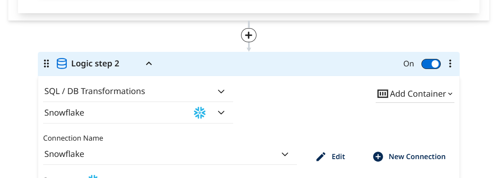
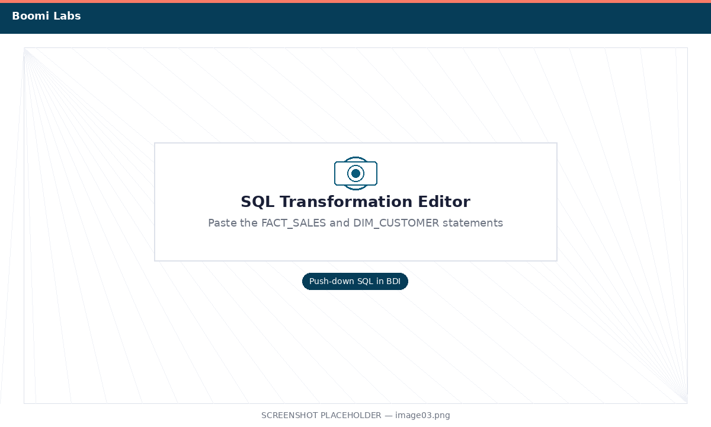
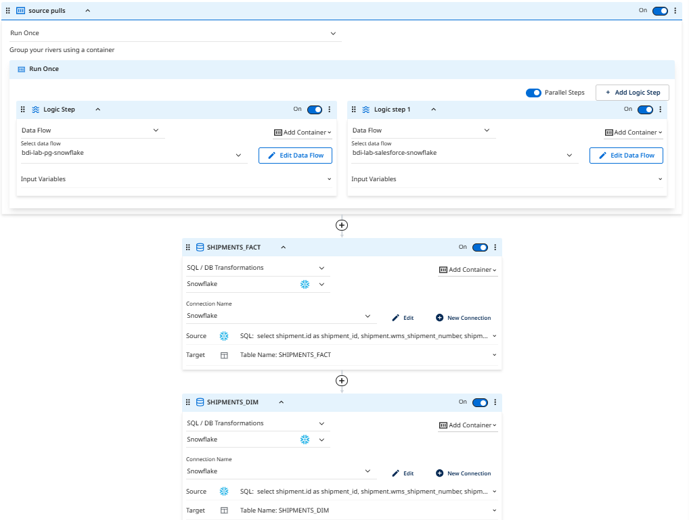
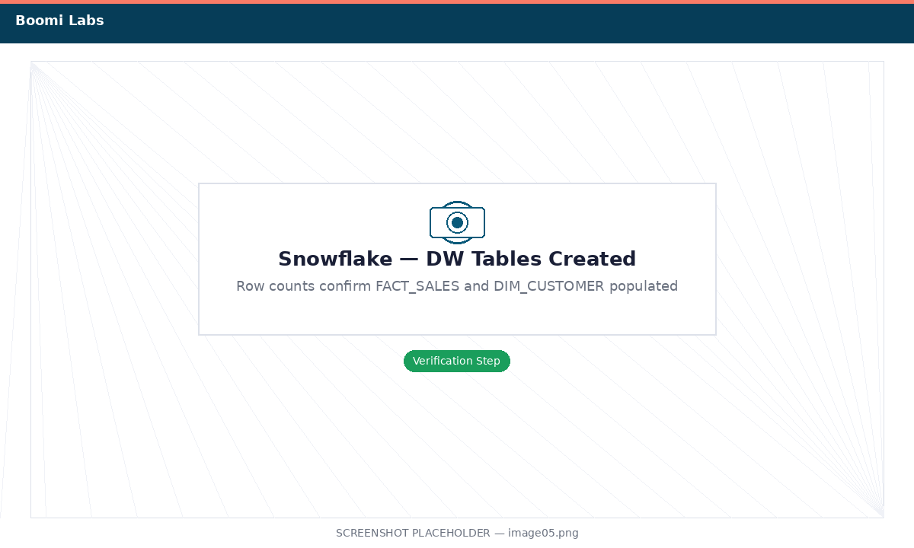
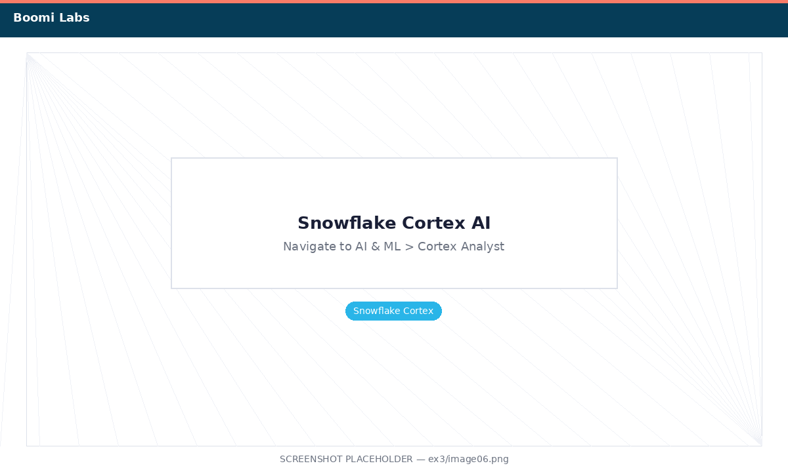

Transform SAP Data into a Data Warehouse
Use a BDI SQL Transformation to reshape raw SAP data into analytics-ready fact and dimension tables, then explore with Snowflake Cortex.
What you'll do
The raw table you created in Exercise 2 (SAP_SALES_ORDERS_RAW) is a flat denormalized dump of SAP data — great for landing data quickly, but not ideal for analytics. In this exercise you'll add a SQL Transformation step to your BDI pipeline that runs push-down SQL directly inside Snowflake to build two proper data warehouse tables:
- DW.FACT_SALES — one row per sales order line item with all measurable facts
- DW.DIM_CUSTOMER — one row per unique customer with descriptive attributes
Finally, you'll use Snowflake Cortex AI to ask natural-language questions about the data you've built.
Add a SQL Transformation to the Pipeline
Open the flow from Exercise 2 and attach a SQL Transformation step.
-
1
In BDI, go to your
sap-to-snowflake-raw-XXflow from Exercise 2 and click Edit. -
2
At the bottom of the flow editor, click + Add Step and choose SQL Transformation.

Click + Add Step → SQL Transformation -
3
In the SQL Transformation settings, confirm the Connection is set to
Snowflake_SAP_DW— this ensures the SQL runs inside Snowflake (push-down). Name the step Build DW Tables.
Confirm the Snowflake connection is selected for push-down execution
Write the SQL for Fact and Dimension Tables
Paste the transformation SQL into the BDI SQL editor.
-
1
In the SQL editor, paste the following SQL. This creates the FACT_SALES table — one row per sales order line item.
-- Fact table: one row per order line item CREATE OR REPLACE TABLE SAP_DW_LAB.DW.FACT_SALES AS SELECT VBELN AS order_id, POSNR AS line_item_id, KUNNR AS customer_id, MATNR AS material_id, TO_DATE(ERDAT, 'YYYYMMDD') AS order_date, TRY_CAST(KWMENG AS FLOAT) AS quantity, KMEIN AS unit_of_measure, TRY_CAST(NETWR AS FLOAT) AS net_order_value, WAERK AS currency, VKORG AS sales_org, VTWEG AS distribution_channel, SPART AS division, ARKTX AS item_description FROM SAP_DW_LAB.RAW.SAP_SALES_ORDERS_RAW WHERE VBELN IS NOT NULL; -
2
Add a second statement (after a semicolon) to create the DIM_CUSTOMER dimension — one row per unique customer.
-- Dimension table: one row per unique customer CREATE OR REPLACE TABLE SAP_DW_LAB.DW.DIM_CUSTOMER AS SELECT DISTINCT KUNNR AS customer_id, VKORG AS sales_org, VTWEG AS distribution_channel, SPART AS division FROM SAP_DW_LAB.RAW.SAP_SALES_ORDERS_RAW WHERE KUNNR IS NOT NULL;
Both SQL statements in the BDI SQL editor -
3
Click Validate SQL. BDI will connect to Snowflake and confirm there are no syntax errors. Then click Save.
Run the Full Pipeline and Verify
Trigger a fresh run that loads RAW then transforms into DW tables.
-
1
Click Run Data Flow. Open the live run tree. You should now see two steps:
- The source-to-target step loading
SAP_SALES_ORDERS_RAW - The Build DW Tables SQL transformation step
Wait for both steps to show a green checkmark.

Both pipeline steps complete successfully - The source-to-target step loading
-
2
Switch to your Snowflake Worksheet and run the following to verify both DW tables were created:
-- Check the fact table SELECT COUNT(*) AS total_line_items FROM SAP_DW_LAB.DW.FACT_SALES; -- Check the dimension table SELECT COUNT(*) AS unique_customers FROM SAP_DW_LAB.DW.DIM_CUSTOMER; -- Sample: top 5 customers by total order value SELECT customer_id, SUM(net_order_value) AS total_value, currency FROM SAP_DW_LAB.DW.FACT_SALES GROUP BY customer_id, currency ORDER BY total_value DESC LIMIT 5;
Row counts confirm both tables were created and populated
Explore with Snowflake Cortex AI
Use natural language to ask questions about your SAP data warehouse.
-
1
In the Snowflake UI, click the Cortex AI icon (sparkle icon) in the left navigation, or navigate to AI & ML → Cortex Analyst.

Open Cortex AI from the left sidebar -
2
Point Cortex at your
SAP_DW_LAB.DWschema and try the following natural-language questions:Try it "What are the top 10 customers by total sales value?"Try it "Show me monthly sales totals for this year."Try it "Which materials have the highest order quantities?"
Cortex AI translates natural language into SQL and renders results as charts -
3Lab complete! 🎉 You've built a full SAP-to-Snowflake data warehouse pipeline with Boomi:
- Published a Table Service in Boomi for SAP exposing VBAK + VBAP sales data
- Used Boomi Data Integration to load that data into a Snowflake RAW schema
- Transformed the raw data into FACT_SALES and DIM_CUSTOMER tables using push-down SQL
- Explored the results with Snowflake Cortex AI
Next Steps
- Schedule the BDI flow to run nightly for incremental SAP loads
- Add more SAP Table Services (e.g., customer master data from KNA1) to enrich
DIM_CUSTOMER - Connect a BI tool like Tableau or Power BI to
SAP_DW_LAB.DWfor dashboarding - Explore the Boomi for SAP Lab to learn BAPI invocations and real-time events